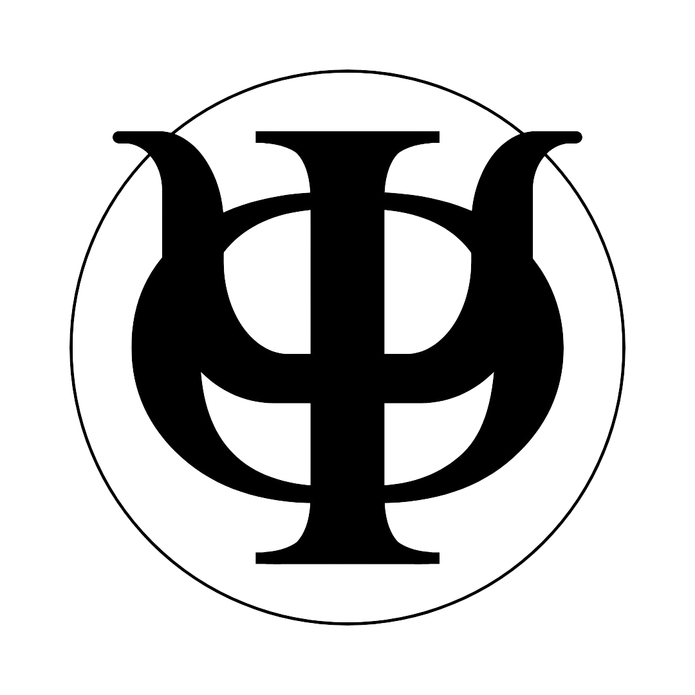

SESIONES DE LECTURA EN FILOSOFÍA DE LAS CIENCIAS
Prolegómenos epistemológicos de Konrad Lorenz
Tradicionalmente se habla del esfuerzo kantiano como un intento de responder a la pregunta de cuáles son las condiciones de posibilidad del conocimiento. Kant sugiere las intuiciones puras y las categorías como tales condiciones (Kant, 2004). No existe juicio que no esté enmarcado en ellas. Ahora bien, el trabajo de Konrad Lorenz en Behind the mirror se puede tomar como un nodo dentro de este árbol de ideas, en el cual intenta explicar el origen de las condiciones del conocimiento y nuestro endeble acceso a la realidad por medio de la biología. En este respecto, Lorenz comparte mucho con los fisiólogos del siglo anterior, tal y como Johannes Müller (Bunge, 1886, Du Bois-Reymond, 1859) y Helmholtz (1882), entre otros. Lo que estos fisiólogos intentaron, junto con Lorenz, fue dilucidar cómo los mecanismos orgánicos condicionan las apariencias de la realidad. Empero, Lorenz da un paso más allá y, junto con los epistemólogos evolutivos, enmarca la necesidad de una relación entre las apariencias y la realidad en virtud del acoplamiento de los mecanismos neurocognitivos y neurosensoriales a esta realidad que constriñe su evolución. La conclusión de Lorenz es que no hay epistemología sin biología.
Hay mucho que se puede decir con respecto a este tema. En particular, existe un debate de gran importancia sobre el giro metodológico de los biólogos del siglo XIX en adelante. ¿Es legítima la forma de hacer epistemología de los fisiólogos y biólogos evolutivos? ¿Hasta qué punto es apropiado que los biólogos empleen el vocabulario kantiano extraído de un análisis trascendental (aunque Lorenz niegue que sus categorías son las mismas que las de Kant) si prescinden de él? De otra manera, si ya nuestro conocimiento de los sistemas nerviosos, los órganos sensoriales y los procesos evolutivos lo adquirimos a través de apariencias condicionadas por las intuiciones puras y las categorías, ¿hasta qué punto nos pueden informar acerca de las condiciones necesarias de la experiencia, si no escapan de esta?
Estas son preguntas que no puedo pretender responder acá (y que, además, ameritan una formulación más precisa), pero que vale la pena tomar en cuenta. Sin embargo, puesto que Lorenz intenta enfrentarse a este problema directamente, compartiré unas ideas al respecto al final del texto. En general, en virtud de todas estas controversias alrededor de cómo se relaciona la filosofía trascendental con el trabajo en biología, es menester tomar la obra de Lorenz con un grano de sal. Por ello, a partir de ahora nos enfocaremos principalmente a entender los postulados de Lorenz con respecto al realismo hipotético de acuerdo al primer capítulo de Behind the mirror, los cuales serán objeto de discusión en el semillero Arroz con habichuelas para el martes 19 de mayo de 2026.
De acuerdo con Lorenz, los desarrollos anatómicos y la morfogenia producen "imágenes reales del mundo exterior" (Lorenz, 1973/1977, p. 6) en el sistema orgánico. Es decir, los organismos deben adaptarse para reproducirse. Para adaptarse, las estructuras y formas que evolucionan deben estar acopladas a propiedades objetivas del entorno, lo cual provoca que terminen reflejándolo. De esta manera, el pez puede nadar porque tiene aletas y una forma que se acopla a las propiedades hidrodinámicas del agua, las cuales son independientes del pez y, en virtud de ese acoplamiento, las estructuras del pez terminan reflejando esta serie de propiedades del agua. El pez no podría nadar y, por ende, no podría sobrevivir ni reproducirse, de no ser por cómo sus estructuras se acoplan y, en consecuencia, reflejan el entorno que habita:
"The fish's motion and the shape of its fins reflect the hydrodynamic properties of water, which possess these properties irrespective of whether there are fins moving through it or not [...] Likewise the behaviour of men and animals, in so far as it is adapted to their environment, is an image of that environment" (Lorenz, 1973/1977, p. 6).
En resumen, para reproducirse, los organismos deben tener órganos y estructuras que se acoplen al entorno real en que se desenvuelven. La selección natural se habría encargado de constreñir los órganos y estructuras posibles a solo aquellos que logren este acoplamiento, de tal forma que los organismos no solo logran reproducirse, sino que en virtud de ese éxito reproductivo reflejan propiedades del entorno que habitan.
Un aspecto curioso de la línea de pensamiento de Lorenz en este capítulo es su atribución de conocimiento a un paramecio. En virtud de cambiar de rumbo cuando se consigue con un obstáculo para su trayectoria original, Lorenz asevera que el paramecio "sabe" algo objetivo sobre su entorno, que no puede seguir adelante.
"What it 'knows' is absolutely correct — namely, that it cannot go straight ahead" (Lorenz, p. 6) [...] "The paramecium [...] makes do [...] with a one-dimensional 'ideation of space'" (Lorenz, 1973/1977, p. 9-10).
Esta observación es fundamental ya que revela un poco lo que Lorenz busca tratar por conocimiento, y queda cuestionarnos hasta qué medida es el conocimiento de Lorenz el mismo conocimiento que le interesa al epistemólogo o al científico. Posteriormente, Lorenz afirma que todo lo que sabemos sobre el mundo en que vivimos se deriva de nuestros mecanismos filogenéticamente evolucionados para adquirir información, los cuales, admite, son infinitamente más complejos que los del paramecio, pero se desarrollaron en función de los mismos principios. Esto, sin embargo, no indica aún cómo Lorenz pretende resolver los problemas de la epistemología si la respuesta de evitación del paramecio es una manifestación del conocimiento que las proposiciones científicas o filosóficas, en particular por el elemento social del que también participan junto con la dimensión perceptual. Es lamentable que este punto no vuelva a ser tratado en los prolegómenos, pero puede que sea retomado en el resto del libro.
Dejando eso a un lado, ya que no conseguirá resolución durante esta lectura, podemos continuar explorando el elemento 'realista' de Lorenz en los párrafos subsecuentes. Para el autor, nuestro aparato cognitivo es una realidad objetiva que ha adquirido su forma presente a través del contacto con y la adaptación a cosas igualmente reales en el mundo "exterior". Puesto que nuestro aparato cognitivo es el producto de procesos evolutivos, este debe estar constreñido por la realidad a un punto en que reflejan sus propiedades objetivas de una forma u otra. Así, afirma:
"The spectacles of our modes of thought and perception, such as causality, substance, quality, time and place, are functions of a neurosensory organization that has evolved in the service of survival. When we look through these 'spectacles', therefore, we [...] experience [...] a real image of reality — albeit an extremely simple one, only just sufficing for our own practical purposes; we have developed 'organs' only for those aspects of reality of which, in the interest of survival, it was imperative for our species to take account, so that selection pressure produced this particular cognitive apparatus" (Lorenz, 1973/1977, p. 7).
Estos extractos nos indican cómo han de estudiarse las facultades cognitivas de los seres humanos (a decir, a través de la fisiología y la biología evolutiva), mas no el porqué. ¿Qué razón tenemos para, en estas fechas, tras siglos, sino milenios, de indagación epistemológica aparentemente en círculos, intentar retomar el tema desde un enfoque biológico?
Lorenz afirma que los mecanismos fisiológicos y psicológicos de nuestra cognición deben ser estudiados por la misma razón por la cual un biólogo estudia microscopía, a decir, para entender los límites del instrumento, y para diferenciar aquello que pertenece a lo observado contrario a aquello que es un producto del microscopio en sí. Posteriormente, Lorenz afirma que es 'patente' el hecho de que la Ding an sich es incognoscible, que solo podemos conocer Erscheinungen, las cuales son tanto producto de la Ding an sich como de nosotros mismos.
Esto ha de interpretarse como que, aunque solo tengamos acceso inmediato a las apariencias, hemos de reconocer que las apariencias son el producto de la interacción entre el fenómeno y el sujeto cognoscente. Esto motivará a Lorenz a afirmar que, en virtud de esta relación, debe haber propiedades compartidas entre las apariencias que percibimos y la realidad en sí misma, es decir, que tenemos un acceso, aunque limitado, a la realidad.
Aquí, sin embargo, nos conseguimos una nueva tensión en la línea de postulados de Lorenz: Durante las primeras fases de la sección, el autor aseveró que tenemos un acceso simplificado a la realidad; es decir, que percibimos la realidad, tan solo no su totalidad. Mientras algunos animales perciben campos electromagnéticos y longitudes de ondas a las cuales nuestro sensorio no está adaptado, nosotros tenemos acceso a otras formas de la realidad que otros organismos no. Sin embargo, hay una diferencia entre afirmar que vemos un segmento de la totalidad de la realidad y postular que observamos un producto de la realidad con nuestro aparato cognitivo filogenéticamente evolucionado. Es decir, aunque en ambos hay una clara relación entre lo que se percibe y la realidad, no es lo mismo un realismo directo que indirecto: lo que percibimos es o un segmento de la totalidad de la realidad (en virtud de que no tenemos órganos sensoriales para responder a todos los tipos de transformaciones de energía que existen), o una imagen producto de la relación entre la realidad y nuestros mecanismos orgánicos (lo cual podría matizarse en términos de representación o construcción).
Dejando esta tensión también a un lado, a partir de los postulados anteriores Lorenz abandera el realismo hipotético de Campbell, el cual, explica, es una forma de epistemología que se interesa por la evolución filogenética de nuestro aparato cognitivo y las consecuencias que este análisis evolutivo tiene para una teoría del conocimiento. Más tarde, Lorenz afirma que el realismo hipotético también es la suposición de que todo conocimiento deriva de una interacción entre el sujeto que percibe y el objeto de su percepción, los cuales son ambos igual de reales (¿cuánto de hipotético hay aquí exactamente?). En párrafos subsecuentes, Lorenz ilustra cómo puede verse esta epistemología, afirmando que nuestra ideación o intuición pura del espacio 'son' los canales semicirculares membranosos en nuestras orejas, así como también nuestros puntos de contacto en la piel y nuestras retinas:
"It appears to me self-evident that [these organs and functions] are at the root of our phenomenal three-dimensional, Euclidian space — indeed, that in a certain sense they are this particular form of ideation" (Lorenz, 1973/1977, p. 10).
En virtud de que estos órganos evolucionaron para acoplarse a las propiedades del entorno y las necesidades de la especie, en este caso la tridimensionalidad inherente a la forma de vida primate, se puede afirmar que esta percepción de un espacio euclidiano es un reflejo de un segmento de la realidad, aunque incompleto (en la medida en que Lorenz cree en la cuatridimensionalidad del Universo como una propiedad real de este). En este extracto, curiosamente, vemos una vez más la oscilación entre una percepción incompleta de la realidad (percibimos tres de cuatro dimensiones) contraria a una percepción fabricada, aunque constreñida, por la realidad.
De carácter más interesante están los mecanismos neuronales de "constancia", lo cual se asemeja parcialmente al concepto de leyes de control de la conducta en psicología ecológica (Raja & Gramann, 2025). Estas leyes se refieren a patrones de mayor orden en que fluye la información perceptual, tal y como el acoplamiento τ. En el caso de Lorenz, los mecanismos neuronales de constancia se refieren a patrones en cambios perceptuales que son fundamentados por una propiedad constante. Un ejemplo en Lorenz es el del mecanismo responsable de aprehender un objeto como de tamaño constante a pesar de que el tamaño de su imagen en la retina cambie a medida que nos acerquemos o nos alejemos de este. Empero, mientras que los psicólogos ecológicos enfatizan sus componentes proximales como la relación que tienen estas leyes de control en la conducta, Lorenz hablaría en términos más distales sobre el valor en términos de adecuación biológica de estos mecanismos. Asimismo, Lorenz enfatiza el papel que estos mecanismos tienen para la objetivación racional y deliberada. Es decir, aquellos que nos permiten eliminar los elementos 'subjetivos' de nuestros juicios a favor de los más 'objetivos', lo cual en instancias trata como aquellos que son 'constantes'. Es decir, algo es objetivo en la medida en que se mantiene constante de un estado psicofisiológico a otro. Usando el ejemplo de un objeto al que nos aproximamos, puesto que las razones entre un objeto y el resto a su alrededor se mantienen constantes a medida que nos acercamos a este, se puede afirmar que su tamaño objetivamente no ha cambiado.
"That a number of physiological mechanisms have adapted themselves to this particular function serves to strengthen our conviction of the reality of the outside world" (Lorenz, 1973/1977, p. 11).
Lorenz también enfatiza que la realidad a la que todos los animales responden es la misma en la medida de mecanismos compartidos como el de condicionamiento. Según el autor, el condicionamiento en animales y la capacidad de razonamiento causal en humanos son ejemplos de cómo las criaturas se adaptan a un dimensión particular de la realidad, a decir, el que las transformaciones de energía involucran secuencias cronológicas específicas de eventos. Para Lorenz, sería "absurdo" buscar para las diferentes maneras en que los aparatos sensoriales y cognitivos se adaptan al mundo una explicación que no se refiera al mismo y único universo real. Del reino comparativo en cuanto a las aptitudes de condicionamiento de los animales salta a la intersubjetividad y el acuerdo entre seres humanos con el siguiente ejemplo:
"If all of us agree that at the moment there are five wine glasses standing on the table, I fail to see how anyone in his right mind can explain this fact otherwise than by asserting that whatever ''thing-in-itself'' may be lurking behind the phenomenon ''wine glass'' is actually present five times" (Lorenz, 1973/1977, p. 12).
Posteriormente, Lorenz busca abordar el problema mencionado al principio del texto, formulándolo primero de la siguiente manera:
"The consistent neo-Kantian would reply that knowledge of physical facts and acceptance of their reality are pre-conditions for our belief that we can form definite ideas about the perceiving apparatus whose physical reality we also presuppose. But, he would continue, both of these are part of our 'physical world picture', which, to the transcendental idealist, is in no way a true image of the world; to attempt to prove the one from the other would be like Barn Münchhausen pulling himself out of the mire by his own hair" (Lorenz, 1973/1977, p. 12-13).
Es decir, que para formar juicios sobre nuestro aparato perceptual cuya realidad presuponemos, necesitamos aceptar la posibilidad y realidad del conocimiento de hechos físicos. Empero, ambos son partes de nuestra imagen fenomenal del mundo, lo cual no es una imagen verdadera de este, y no se puede explicar uno a partir del otro sin caer en un argumento circular.
La respuesta al argumento de la circularidad que Lorenz preparó fue afirmar que el científico no parte de la suposición de la existencia de la realidad física. En cambio, parte de la experiencia subjetiva y de un intento de buscar constancias en ella, y luego de ahondar más en la experiencia subjetiva a través de las constancias descubiertas en el entorno. Lorenz ofrece un ejemplo con el descubrimiento de las longitudes de onda y el mecanismo de computación de la constancia del color. Posteriormente, extiende su defensa afirmando que, en la medida en que corregimos nuestro entendimiento sobre nuestras operaciones cognitivas a través de nuestros descubrimientos sobre las constancias del mundo que percibimos y vice versa, "paso a paso" (o lo que llama elucidación mutua), estamos descubriendo una realidad objetiva.
Este argumento, difícilmente, demuestra que nuestras apariencias corresponden a una realidad objetiva. La constancia de nuestras percepciones no justifica la constancia de una realidad externa que la subyace, mucho menos remotamente una isomorfía entre ambas. Lo que constancias en las percepciones indican es que la configuración que subyace nuestras percepciones es constante también; un transmisor que arregla las apariencias de acuerdo a una serie de estructuras lógicas que no cambian. Del mismo modo, en la medida en que las apariencias nos revelen formas previamente desconocidas de nuestras operaciones mentales lo que descubrimos es por ingeniería inversa cómo la mente configura nuestra experiencia. El acoplamiento y el descubrimiento de cómo la mente actúa a partir de cómo operan los objetos de las apariencias y vice versa es una consecuencia lógica de la estructuración de la experiencia de acuerdo a las actividades mentales y, por ende, de la correspondecia de la experiencia a una lógica interna. Por sí mismo, estas constancias no revelan cómo se ve la realidad más allá de la experiencia pues, como bien Lorenz lo menciona (aunque lo rechace), Münchhausen no puede escapar del fango jalándose su propio cabello. Para esgrimir este argumento apropiadamente Lorenz debe establecer cómo es que se sigue de las constancias y la elucidación mutua el hecho de que tengamos acceso bien sea directo o indirecto a las cosas en sí mismas.
En síntesis, este capítulo, aunque conceptualmente vago y argumentativamente un poco débil (en especial en aquellas secciones donde el argumento se reduce a lo obvio, o «self-evident», y lo absurdo), establece con claridad el objetivo de Lorenz a lo largo del libro: formar una teoría del conocimiento basada en la fisiología y la biología evolutiva, como parte de una tradición más larga llamada epistemología evolutiva y en respuesta a la filosofía neo-kantiana.
Bunge, G. (1886). Vitalismus und Mechanismus: Ein Vortrag. Verlag von F. C. W. Vogel
Du Bois-Reymond, E. (1859). Gedächtnissrede auf Johannes Müller. F. Dümmler’s Verlags-Buchhandlung
Kant, I. (2004). Cambridge texts in the history of philosophy: Immanuel Kant: Prolegomena to any future metaphysics: That will be able to come forward as science: With selections from the critique of pure reason (G. Hatfield, Ed.). Cambridge University Press.
Lorenz, K. (1973/1977). Behind the mirror: A search for a natural history of human knowledge. Harcourt Brace Jovanovich
Raja, V., & Gramman, K. (2025). Ecological resonance is reflected in human brain activity. Psychophysiology, 62(9), https://doi.org/10.1111/psyp.70136
Freddy J. Molero-Ramírez
fmolero@mail.uniatlantico.edu.co